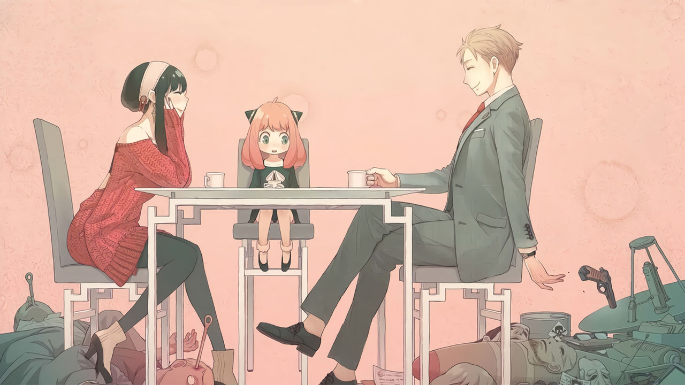

About Anya

Anya and her family
Anya's Characteristics
- She is really short
- She has pink hair
- She loves her family
Anya's family and friends
Anya has a interesting family and some cute friends.Click on the links below to read more about them
Anya and her family
Anya has a interesting family and some cute friends.Click on the links below to read more about them